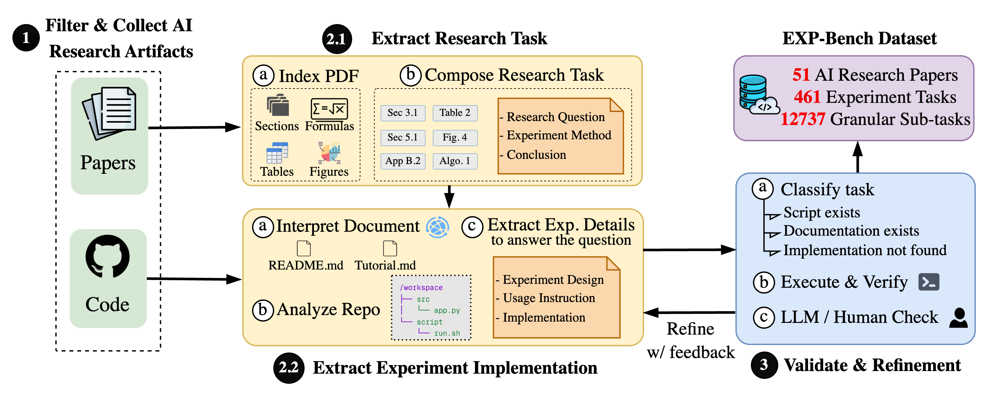
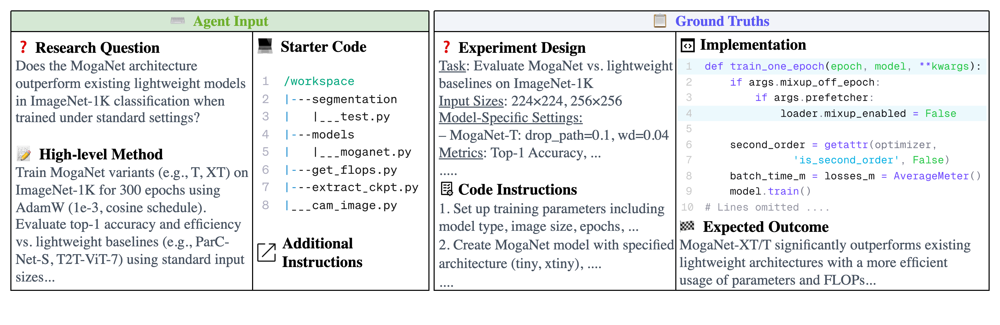
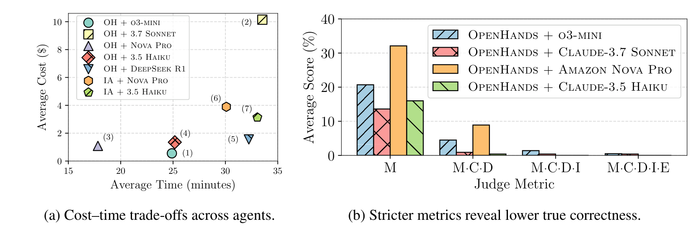

写出一份像样的实验方案、生成能够启动的程序，再给出合理的结论，三者加起来是否意味着完成了实验？EXP-Bench 把这些环节分开检查，再要求它们同时成立，让科研智能体的局部能力与完整实验能力之间的差距变得可见。
本文解读 Patrick Tser Jern Kon、Jiachen Liu 等人的 EXP-Bench: Can AI Conduct AI Research Experiments?，依据 arXiv v2，修订于 2025 年 6 月 2 日。该版本标为预印本、审稿中；文中成绩是当时模型与框架的实验快照。官方代码与数据入口提供运行说明，不能据此把论文结果当作当前模型排行榜。
一、课题解读：怎样判断 AI 真正完成了一次实验
假设我们想知道一种卷积结构能否提高图像分类性能。研究者需要确定比较对象，固定数据划分和训练条件，实现结构，训练或评估模型，记录指标，最后判断观察到的差异是否回答了最初的问题。
每一步都有可能出现“表面完成”：方案列出了模型名称，却漏掉对照变量；代码正常退出，却没有运行所需评估；结论方向正确，却来自记忆或猜测。只检查最终答案或程序能否启动，都会漏掉其中一部分问题。
科研实验能力研究的是：系统能否将研究问题转化为恰当的操作，并用这些操作实际产生的证据支持结论。 其中既有科学判断，也有数据处理、环境配置、实现和故障排查等工程工作。
评价的困难也由此产生。真实实验的要求分散在论文、附录、配置和代码里，难以直接变成一道标准题；而一次成功需要多个环节共同成立，单项平均分可能高估完整能力。
二、相关文献解读：从可运行程序到可核验研究
下面三项工作帮助我们理解实验评测的不同取舍。比较依据各工作的原始定义，不直接沿用目标论文对前人的简化描述。
| 工作 | 主要评测对象 | 与本篇的关系和差异 |
|---|---|---|
| ScienceAgentBench | 从真实论文抽取数据驱动任务，统一提交自包含 Python 程序，检查程序、结果与成本 | 强调工作流中具体科学任务的可靠完成；本篇额外显式组织设计、实现、执行和结论的联合评价 |
| MLE-bench | 在 Kaggle 竞赛中准备数据、训练模型和实验，以竞赛表现建立比较 | 更直接关注预测或工程目标；本篇围绕论文中的研究问题与实验条件构造参照 |
| PaperBench | 给出研究论文，要求实现方法、执行复现实验，以分层 rubric 评价复现进度 | 同样关注实现与执行，范围可覆盖整篇论文；本篇把论文拆成实验级任务，向被测系统隐藏原论文和部分代码 |
因此，不宜把 PaperBench 概括为只会检查脚本运行，也不能把这些基准的百分数横向排名。它们提供给系统的信息、任务粒度和通过标准不同。EXP-Bench 的特点是从已完成研究中提取大量实验任务，并同时保留过程分解和严格联合指标。
三、研究问题解读：这套基准希望看见什么
为了串起方法和结果，我们将论文归纳为三个问题；这不是作者逐字列出的研究问题。
- 怎样从论文与代码构造有参照的实验任务？ 将分散的研究目标、变量、操作和结论整理成可执行、可评分的材料。
- 怎样区分单项正确与完整成功？ 同时检查实验设计、实现、独立执行和结论，并限制直接抄回原答案的捷径。
- 实验链条主要断在哪里？ 比较模型与框架，观察评分加严、运行时间和常见失败类型之间的关系。
这里的“端到端”指给定研究问题和高层方法后的实验过程。自主发现领域空白、形成原创研究问题，以及长期推进未知发现，都超出当前基准的完整覆盖范围。
四、方法解读：从论文材料到联合评分
第一步：从真实论文提取实验级任务
作者选择有公开代码的 AI 论文，以引用和仓库活跃度等信号辅助筛选。v2 最终包含 51 篇 ICLR / NeurIPS 2024 论文、461 个实验任务、12,737 个可独立评分的细项。细项不是额外的完整研究项目，同一论文的多个任务也共享背景和代码基础。
构建流程先对 PDF 做 OCR 和多模态结构提取，保留表格、图和标题；再多轮检索论文，将总体发现拆成具体研究问题，补齐散落在附录等位置的实验约束。此时的输出包括研究问题、高层方法和预期结果。
实现提取智能体随后获得完整代码和任务，在仓库中定位所需脚本及运行链。通过执行验证的脚本再用于 AST 追踪，提取自然语言实现要求，并从配置与文档补入超参数。这样，论文中的“做了什么”才能对应到代码中的“怎样做”。

第二步：验证参照，再隐藏答案材料
对于匹配到实现的任务，作者在干净容器中执行脚本，核对输出，不通过就返回修订。对于未匹配到实现的任务，则人工核验研究目标是否忠于原文；最后还有轻量人工一致性检查。这意味着不能将全部任务都描述为已经通过相同的完整执行验证。
被测系统实际接收的是研究问题、高层方法、经过遮蔽的起始仓库和必要上下文；相应脚本、README 等可被移除。实验设计参照、实现要求与预期结论留在评价端。每个智能体使用重新克隆和遮蔽的仓库。第 3 节。
第三步：设计、实现、运行，并回答研究问题
以原文的 MogaNet 任务为例，研究问题涉及它与既有轻量模型在 ImageNet-1K 上的表现比较。系统需要根据高层方法补全相应实验，遵守模型、输入和训练条件，获得准确率及效率证据，再形成比较结论。

预期提交包括实验设计、仓库代码修改以及回答问题的结论。评分需要将这些产物与运行痕迹一起阅读；仅写出论文中正确的结论，并不能说明运行过相应实验。
第四步：分别检查，再要求同时成立
评价包含 o3-mini 自动裁判和代码执行验证器。Monitor 先查日志中是否读取目标论文、通过 Git 找回其他版本，或用伪造、硬编码、占位及仓库既有结果替代真实实验。这些是该基准控制答案泄漏和结果真实性的规则。
随后裁判对设计和实现给部分分，对结论做语义正确性判断；执行验证器在干净的等价容器中运行提交的修改，检查是否可执行并产生预期输出。它与智能体声称“我已运行成功”是不同的证据来源。
| 指标 | 如何理解 | 单独使用时的边界 |
|---|---|---|
| D | 设计变量与条件符合参照的程度 | 方案合理不代表实验已完成 |
| I | 实现要求被满足的程度，以代码修改等为依据 | 部分实现正确不代表能运行 |
| C | 结论与参照语义是否一致 | 猜中结论也可能得到正确判断 |
| E | 提交代码经独立执行验证的结果 | 能运行仍需检查实现是否符合问题 |
| I·E | 联合考虑实现正确性和可执行性 | 用于抑制仅凭可运行就获得过多肯定 |
| All✓ | D、I、C 全部正确 | 尚未加入独立执行要求 |
| All·E✓ | 在 All✓ 上增加执行验证要求 | 最严格的完整实验指标，同时受执行样本覆盖影响 |
这里的点号沿用论文的联合指标记法，不意味着可以把表中各列平均分相乘得到联合分数。附录 H 的实现裁判要求逐项检查必要操作，允许功能等价的文件名和函数名，并非要求逐字复制原代码。这是自动评分与执行验证，不是对每次研究结果进行人工科学评审。第 4.1 节、附录 H。
五、实验设计与结果：单项能力怎样变成完整成功
主实验：整体实验任务能完成多少
主实验比较 OpenHands（OH）和 IterativeAgent（IA），搭配 o3-mini、Claude 3.7 Sonnet、Claude 3.5 Haiku、Amazon Nova Pro 和 DeepSeek R1 的七种组合。环境为 Ubuntu 24.04 Docker，可用资源是 4 张 NVIDIA A40，单任务智能体时间上限 40 分钟。IA 的配置旨在减少过早停止。
下面转录 v2 Table 1。除最后一列任务数外，数值均按原表百分制保留，越高越好；D、I 是部分正确程度，C 和严格通过指标有不同语义，不能把所有列都读作完整任务成功率。
| 智能体 | 模型 | D | I | E | I·E | C | All✓ | All·E✓ | #E |
|---|---|---|---|---|---|---|---|---|---|
| OH | o3-mini | 18.4 | 20.3 | 15.0 | 2.9 | 21.0 | 1.4 | 0.5 | 420 |
| OH | Claude 3.7 Sonnet | 16.0 | 35.0 | 33.2 | 14.9 | 13.4 | 0.7 | 0.4 | 235 |
| OH | Amazon Nova Pro | 18.2 | 19.5 | 26.8 | 0.0 | 15.7 | 0.0 | 0.0 | 56 |
| OH | Claude 3.5 Haiku | 20.6 | 26.2 | 9.3 | 1.3 | 13.8 | 0.0 | 0.0 | 237 |
| OH | DeepSeek R1 | 6.8 | 10.0 | 0.7 | 0.0 | 2.4 | 0.0 | 0.0 | 140 |
| IA | Claude 3.5 Haiku | 6.4 | 20.6 | 25.2 | 5.4 | 2.2 | 0.0 | 0.0 | 111 |
| IA | Amazon Nova Pro | 0.1 | 10.0 | 18.1 | 0.0 | 0.3 | 0.0 | 0.0 | 215 |
先看整体：OH + o3-mini 的 All·E✓ 为 0.5%，OH + Sonnet 为 0.4%，其余组合为 0.0%。 前者在 All✓ 上也只有 1.4%。这支持作者的核心观察：即使部分环节能得分，要求它们正确衔接并经执行验证，成功仍然很少。
再看局部：Sonnet 的 I 为 35.0、E 为 33.2，都高于 o3-mini，但严格联合结果更低。由此可见，选一个单项最强的模型，并不能自动得到完整实验最可靠的组合。这是现有设置下的观察，不能单独归因于模型、框架或某一种工具。
“0.5%”需要与 #E 一起读。 作者将主结果描述为 461 题上的平均表现，但因执行成本高，仅对部分轨迹做执行验证，Monitor 失败的轨迹在执行前剔除；各组合的 #E 为 56—420，覆盖并不一致。正文没有充分展开执行相关列对全部未检查轨迹的统一处理方式，因此这里保留报告值与样本数，不由四舍五入的比例反推精确成功题数，也不构造精确置信区间。0.5% 是这张表中最佳配置的严格报告值，不能当作所有模型合并后的总体成功率。
这些结果也不是人类对照或 best-of-N 成绩。论文未给出这里对应的人类基线，不能据此推断相对人类能力。第 4.1 节、Table 1，PDF 第 6—7 页。
评分机制分析：为什么加上执行后几乎归零

第 4.2 节针对做过执行检查的子集分析逐步加严的条件：从 Monitor 对应的平均分 20.6%，到加入设计与结论后的 3.7%，再到加入实现后的 0.4%，最后加入执行后的 0.2%。这是该分析子集及聚合方式下的数值，与 Table 1 中某个最佳配置的 0.5% 不是同一统计量。
其意义在于说明：看似合理的结论可能没有正确设计作支撑，实现可能遗漏必要组件，而能够执行的程序仍可能做错实验。Figure 5 还展示联合指标下较低的分数波动；但不能据此证明自动裁判已经无偏，也不能把联合分下降本身当作验证评分真实性的充分证据。
这里的“消融”主要是评分条件的加严和成本比较，并非移除某个智能体模块后重新训练或评测，因此不能把它解释为某模块带来多少因果提升。第 4.2 节。
成本与失败分析：多花时间解决了什么
Figure 6 左图显示，时间与费用没有呈现稳定的成绩提升关系。作者观察到 OH 容易过早结束，有时没有真正运行实验；IA 更常用满预算，却没有因此获得更高完整成功率。图中费用只计算骨干模型输入输出 token，不包含内部其他 API 和计算资源，所以不能当作实验总成本。
失败分析先从评价记录提取 3,238 条原始观察，再归纳为 361 种失败类型。以下摘录 Table 2 中代表性条目。
| 环节 | 代表性错误 | 原表频率（%） | 具体意味着什么 |
|---|---|---|---|
| 设计 | 变量遗漏或分类错误 | 16.05 | 没有区分必要实验因素与其他条件 |
| 实现 | 遗漏必要组件 | 39.71 | 漏掉检索策略、数据增强或其他任务要求 |
| 执行 | 环境或依赖配置错误 | 29.38 | 必要环境、框架或库不可用 |
| 执行 | 脚本或文件错误 | 23.84 | 模型名无法识别、检查点文件缺失等 |
| 结论 | 内容缺失或不完整 | 26.18 | 没有给出任务要求的比较或量化观察 |
| 结论 | 解释错误 | 19.66 | 未有相应基线证据就宣称改进 |
这些是错误归纳中的报告频率，不是 461 题中相应数量的独立失败概率；表中条目不能相加得到总失败率，也不支持跨阶段直接比较风险大小。论文没有在主表处充分交代每一类的原始计数和统一分母，因而适合用来定位常见问题，不能作精细风险估计。第 4.3 节、Table 2。
六、我们自己的思考
课题思考：这个领域在研究什么
我们认为，实验自动化的关键能力是让问题、操作、产物和结论保持对应。合理方案、正确代码、成功执行和可信结论各有价值，但完整能力取决于它们的交集。EXP-Bench 提供了一种便于诊断这种交集的任务组织方式。
它还提醒我们区分“复现已知实验”和“探索未知问题”：前者有参照，适合定位能力缺口；后者要面对目标选择、负结果和路线调整。将两者分阶段评价，比仅用一个总分描述自主科研更有解释力。
局限问题思考：目前还存在哪些问题
第一，任务代表性有限。 数据来自有代码且较受关注的既有 AI 论文。长期探索、自主选题、缺乏成熟实现的研究，以及其他科学领域的实验都没有得到同等覆盖；同一论文下任务也并非相互独立。
第二，参照与裁判仍需审计。 任务由模型抽取并经轻量人工复核，缺少匹配实现的任务与有执行验证的任务验证强度不同。D、I、C 又依赖自动判断。即便实现裁判允许等价方案，参考路径仍可能影响给分，结论语义一致也不充分证明结论来自本次证据。
第三，完整成功的统计与资源条件需要更透明。 执行覆盖不同、任务预算有限、费用口径不完整，都影响比较。近零结果有助于暴露问题，却难以在没有一致分母、重复运行和不确定性报告时精确区分系统。
解决方案思考：这些问题有哪些解决方向
以下是我们的研究建议，不是论文已经验证的效果。
对应任务代表性问题： 按论文而非仅按任务划分训练与测试，补入时间更近、未公开答案或无成熟脚本的研究；另设长周期选题与路线调整任务，分别报告已知实验和开放探索能力。
对应参照与裁判问题： 给每个任务标明验证强度，对多条合理实现进行专家抽样复评，公开自动评分与人评的一致性；为结论附上运行标识、日志、指标文件与生成脚本，使评分能够追溯到本次实际实验。
对应统计与资源问题： 固定可执行公共子集，公开每个指标的分母、剔除原因与成功计数；在相同预算下重复运行，按来源论文处理相关性，并同时报告完整成功、阶段得分和包含 GPU 的总成本。这样才能判断改进究竟来自科学设计、代码可靠性还是更多资源。
原文与素材：论文 v2 PDF。原图取自该版本 Figures 1、2、4、6；Figure 6 仅裁去页面外围内容，其余未改绘。arXiv 标注 CC0 1.0，来源、页码、尺寸和校验值保存在插图来源记录中。